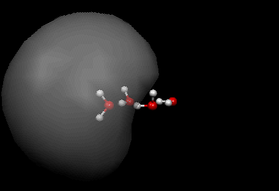
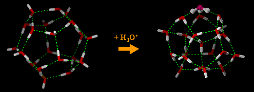

Mark A. Johnson
Arthur T. Kemp Professor of Chemistry, Physical Chemistry
E-mail: mark.johnson@yale.edu
Web site: http://www.yale.edu./jlab
Biographical Sketch
B.S. Univ. California, Berkeley, 1977
Ph.D. Stanford University 1983
Postdoctoral associate at J.I.L.A., University of Colorado, Boulder, 1983-85
Joined Yale Faculty 1985
Camille and Henry Dreyfus Distinguished New Faculty, 1985 & Teacher Scholar, 1990
NSF Presidential Young Investigator, 1987
Professor Invité, Université de Paris-Nord, 1998
Fellow of the American Physical Society, 1999
Japan Soc. for the Promotion of Science (J.S.P.S.) Fellow, 2001
Fellow of the AAAS, 2005
APS Earle K. Plyler Prize for Molecular Spectroscopy, 2006.
Research Description
Imagine that you could make a microscope so powerful that you would be the first person to see the motions of atoms as they rattle about in a liquid solution. A physical chemist might use such a machine to answer age old questions about the solvent-dependent structures of solutes and the role that a solvent plays in controlling the outcomes of reactive encounters. We have designed, built, and commissioned just such an instrument, and we continue to refine our methods to provide ever clearer, molecular level pictures of condensed phase processes. Our “camera” captures snapshots of the liquid environment at an embryonic state using argon nanomatrix spectroscopy, and it encodes these pictures in the energy level patterns obtained through laser spectroscopy. Because our methods are new and unique, we often get the first crisp images of elementary chemical processes. And we routinely discover new chemical species, allowing students working in this program to take the first crack at unraveling the underlying physical principles exposed by the observations. This is not just an experimental program—it is an interdisciplinary approach that integrates technical innovation and interpretive theory.
A diffuse “excess electron” cloud trapped by the water tetramer. This study lead to a molecular level understanding of electron hydration, a primary event in biological radiation damage.
Nanomatrix spectroscopy, our workhorse experimental tool, exploits tandem time-of-flight photofragmentation mass spectrometry to isolate particular species of interest with a precisely determined number of attached solvent molecules. We have successfully applied it to study both electrically charged and neutral systems, and although this method is generally applicable, we specialize in revealing the causes for the peculiar behavior of water that make it the only matrix that supports life processes. I know what you are thinking. Water is so simple that we must understand everything (at least worth knowing) by now! Take two hydrogen atoms one oxygen atom, salt in just the right amount of hydrogen bonding and voila, Water! But the complexity of water is legendary, and scientists from many disciplines are constantly confounded by its unusual, collective behavior. To get started thinking about it, consider that individual water molecules embedded in the liquid are elastic, and the extents of their intramolecular deformations constantly change according the morphology of the surrounding H-bonded network. These deformations are one of the keys to water’s properties. They are, for example, responsible for charge separation (and hence the pH of neutral water) as well as the anomalously facile movement of elementary charges (protons, electrons) through aqueous media. Our methods directly quantify how water behaves when placed in the most extreme environments.
Our specialty is to devise experimental approaches that provide definitive answers to questions left unresolved after decades of effort using traditional methods. The issue that most interests us presently is the cooperative mechanics that act to split a proton free from a water molecule or a dissolved acid. A related process is the water-mediated, intramolecular proton transfer at the heart of zwitterion formation in aqueous amino acids. Is this mediated by a proton “water-wire,” as many think? We are also fascinated by the strong distortions suffered by water molecules that are in direct contact with ions in solution. Of particular interest are the multiply charged species because they curiously explode at critical sizes when water molecules are gradually removed. We are writing the “rule book” that governs these elementary processes. Many patterns are only now becoming clear as our nanomatrix “microscope” probes ever deeper into the underlying fabric of aqueous chemistry. This program is well suited for those with a thirst for discovery and enjoy a fast-paced, continuously evolving approach to physical science.
Addition of the “Eigen” cation, H3O+, to the dodecahedral water nanocage. Here we directly probe how protons migrate through water networks.
Selected References
- “Infrared signature of structures associated with the H+(H2O)n, n = 6-27, clusters.” Joong-Won Shin, Nathan I. Hammer, Eric G. Diken, Mark A. Johnson, Richard S. Walters, Todd D. Jaeger, Michael A. Duncan, Richard A. Christie, and Kenneth D. Jordan, Science, 304, 1137-1140, 2004. (SciencExpress)
- “Snapshots of Water at Work.” William H. Robertson, Eric G. Diken, Mark A. Johnson, Science, 301, 320-321, 2003.
- “Spectroscopic Determination of the OH- Solvation Shell in the OH-• (H2O)n Clusters.” William H. Robertson, Eric G. Diken, Erica A. Price, Joong-Won Shin, Mark A. Johnson, Science, 299, 1367-1372, 2003. (SciencExpress)
- “Caught in the Act of Dissolution.” William H. Robertson, Mark A. Johnson, Science, 298, 69, 2002.
- “Isolating the spectroscopic signature of a hydration shell using clusters: Superoxide tetrahydrate.” J. Mathias Weber, Jude A. Kelley, Steen B. Nielsen, Patrick Ayotte, and Mark A. Johnson, Science, 287, 2461, 2000.
- “How do small water clusters bind an excess electron?” Nathan I. Hammer, Joong-Won Shin, Jeffrey Headrick, Eric G. Diken, Joseph R. Roscioli, Gary H. Weddle, and Mark A. Johnson Science, 306, 675-679, 2004.
- “Spectral signatures of hydrated proton vibrations in water clusters.” J.M. Headrick, E.G. Diken, R.S. Walters, N.I. Hammer, R.A. Christie, J. Cui, E.M. Myshakin, M.A. Duncan, M.A. Johnson, and K.D. Jordan, Science, 308, 1765-1769, 2005.
Last modified: February 15, 2006 (rjc)
Mark A. Johnson
Kemp Professor of Chemistry, Physical Chemistry